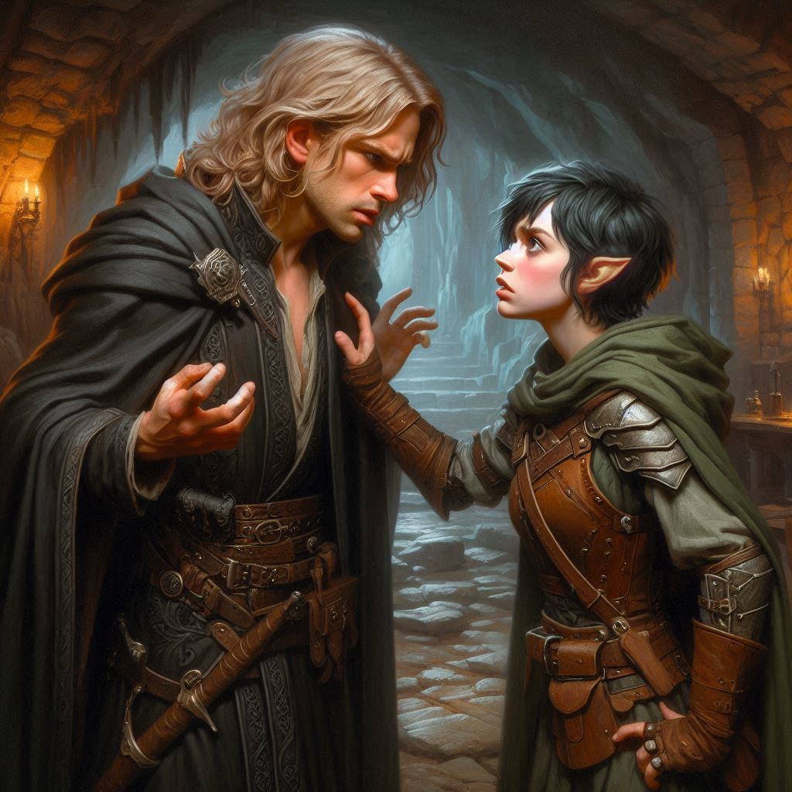
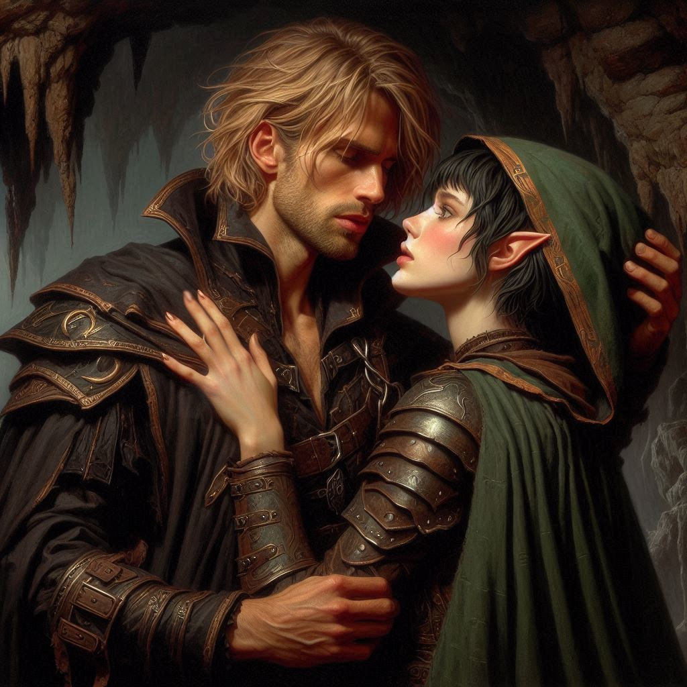

Whispers of Vyrethan
You step into the chamber, the air heavy with the scent of burning incense and something sharper, like singed metal. Jorsh stands at the far end of the room, his figure silhouetted against the flickering light of an enchanted brazier. His eyes catch yours, and for a moment, the weight of your shared past presses down on your chest.
“You came,” he says, his voice carrying a mix of relief and defiance. “I wasn’t sure you would.”
Your heart pounds as you cross the threshold. “You didn’t leave me much choice, Jorsh. You’ve left a trail of clues entangled in a path of chaos and blood. And now I hear you’re meddling with dark powers… magic that none should wield.”
He flinches but doesn’t look away. “You don’t understand what’s at stake.”
“Then explain it to me,” you demand, your voice sharp. “Because all I see is a man who’s abandoned everything he once stood for. Who betrayed everyone who ever believed in him.”
Jorsh’s jaw tightens, and for a moment, you think he might lash out. Instead, he steps closer, the firelight casting shadows across his face. “Do you think I wanted this?” he asks, his voice trembling. “Do you think I wanted to turn against everything I knew? Against you?”
“You chose this path,” you shoot back. “You chose power over loyalty, over love.”
His eyes flash with anger. “I chose survival! Varis has been planning this for years, Kira. He’s not just a corrupt minister; he’s a dark elf prince, a master manipulator. He’s been blackmailing the royal family, orchestrating alliances with demons, and now he’s preparing to sacrifice Onyx to Yaldaboath. Do you understand what that means?”
The name sends a chill down your spine. Yaldaboath, the demon overlord of the Shadow Realm. “Sacrifice?” you echo, your voice barely above a whisper.
Jorsh nods, his expression grim. “Varis believes he can bind Yaldaboath to his will. He’s wrong. The demon will destroy him and everything else in its path. Onyx is the key—his blood, his magic, it’s what Varis needs to open the portal fully.”
Your mind races, piecing together the fragments of what you’ve learned. “And you’re trying to stop him?”
“I’m trying to save what’s left,” Jorsh says, his voice breaking. “I’ve seen what’s on the other side of that portal, Kira. I’ve seen the darkness that waits. If Varis succeeds, there will be nothing left to fight for.”
You take a step closer, your anger mingling with something softer, more vulnerable. “Why didn’t you come to me? Why didn’t you trust me?”
He hesitates, then reaches for your hand. His touch is warm, grounding, and you feel the pull of everything you’ve tried to bury. “Because I couldn’t bear to drag you into this. Not after everything I’ve already done to you.”
The silence between you stretches, heavy with unspoken words. Finally, you speak. “We don’t have time for regrets, Jorsh. We need a plan. Do we go after Varis and stop him before he can complete the ritual, or do we take the fight directly to Yaldaboath?”
Jorsh’s gaze searches yours, and for the first time, you see the fear behind his bravado. “Either path is a gamble. Killing Varis might delay the ritual, but the portal’s already unstable. Destroying Yaldaboath could close it for good, but the Nine Hells are…” He trails off, his voice thick with dread.
“A death sentence,” you finish for him.
“Not necessarily,” he says, a flicker of determination returning to his eyes. “If we can find the heart of his power, we might stand a chance. Together.”
Your breath catches at the word. Together. After everything, the idea feels both impossible and inevitable.
Before you can overthink it, you close the distance between you, your hands finding their way to his face. His eyes widen in surprise, but he doesn’t pull away. When your lips meet, it’s like the world falls away, leaving only the two of you and the fire that’s burned between you for years.
You feel Jorsh’s hands on the small of your back, pulling your hips to his as his lips explore your mouth with the heat of a volcanic eruption that has been building for two years of earth-trembling suppression. Your fingers push into his robes, feeling the muscles of his back and shoulders… the smell of his hair as your lips move to his neck. He groans softly, his hands brushing lightly against your pointed ears as he runs his fingers through your short black hair. You gasp, feeling your emotions spike with an energy you haven’t felt since the night he left.
“Kira,” Jorsh heaves. “I’ve missed you so much. I cannot express the remorse I feel for leaving the way I did.”
“I hate you, you bastard,” you whisper, squeezing him tightly.
“I don’t blame you,” he says. You look up at him, surprised to see his eyes welling with tears.
“How can I hate you and love you so much at the same time?” You grab his face and press your mouths together again. When you finally break apart, your foreheads rest together, your breaths mingling.
“I never stopped loving you, I swear,” Jorsh says. “Where do we go from here?”
“We’ll figure it out,” you whisper. “But you’re not doing this alone. Not anymore.”
Jorsh nods, his hands tightening around yours. “Then let’s end this. Together.”